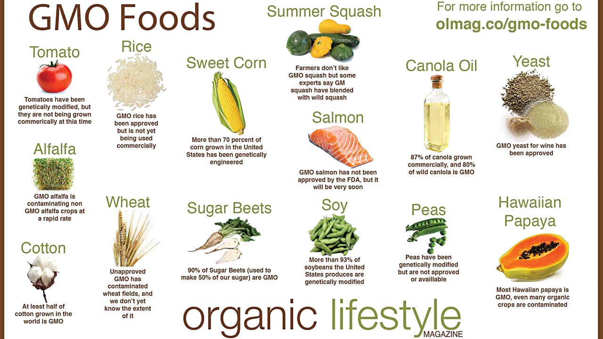
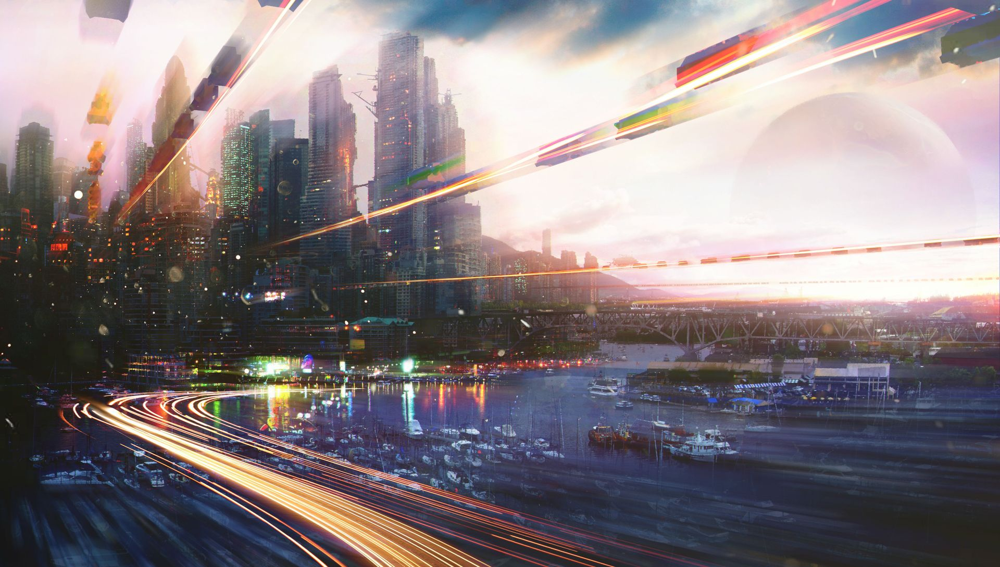

Money is a medium of exchange that enables transactions between people. It has value because people agree to accept it as a means of payment for goods and services. The value of money can be measured by its purchasing power, which refers to the amount of goods and services that can be purchased with a particular amount of money.
The value of money can also be affected by various factors such as inflation, interest rates, and economic conditions. Inflation reduces the purchasing power of money, meaning that the same amount of money can buy fewer goods and services over time. On the other hand, deflation increases the purchasing power of money, meaning that the same amount of money can buy more goods and services over time.
The economic conditions of a country can also affect the value of its currency. A strong economy with low unemployment and high productivity can lead to a stronger currency, while a weak economy with high unemployment and low productivity can lead to a weaker currency.Overall, the value of money is determined by a combination of factors such as inflation, interest rates, and economic conditions. Understanding these factors can help individuals and businesses make informed decisions about how to manage their finances and investments.
GMO Food

GMO Food
GMOs, or genetically modified organisms, are plants, animals, or microorganisms whose genetic material has been altered in a laboratory using genetic engineering techniques. GMOs are created by inserting genes from one organism into the DNA of another organism, often with the goal of improving the organism's characteristics or introducing a new trait. There is ongoing debate about the safety and benefits of GMOs in food. Supporters argue that GMOs can improve crop yields, increase resistance to pests and disease, and reduce the use of pesticides and herbicides. They also argue that GMOs can help to address food shortages and improve food security, particularly in developing countries.
However, opponents of GMOs argue that they may have negative effects on human health and the environment. Some studies have suggested that GMOs could cause allergic reactions or other health problems in humans, although there is no scientific consensus on this issue.
Many countries have regulations in place regarding the use and labeling of GMOs in food. In some countries, such as the United States, the use of GMOs in food is widespread and is not required to be labeled. In other countries, such as Japan and much of Europe, GMOs are more strictly regulated and are often labeled on food products.Ultimately, the decision to consume GMOs is a personal one. Those who are concerned about the potential risks of GMOs may choose to avoid them, while others may view them as a safe and beneficial technology.
The View of World in 2100

The View of World in 2100
Climate change is expected to have a significant impact on the world in the coming decades, with rising sea levels, more frequent and severe weather events, and increased food and water insecurity. It is likely that governments and organizations will work to mitigate these effects through initiatives such as reducing carbon emissions and investing in renewable energy. Advancements in technology are also likely to play a major role in shaping the world in 2100. It is possible that there will be significant advances in fields such as artificial intelligence, robotics, and biotechnology, which could have both positive and negative implications for society.
The global population is also expected to continue to grow, although at a slower rate than in previous decades. By 2100, the population is projected to reach around 10 billion people, with the majority of growth occurring in Africa and Asia. As the world becomes more interconnected through technology and globalization, it is possible that cultural and societal boundaries may become more fluid, leading to greater diversity and inclusivity.
Overall, the world in 2100 is likely to be shaped by a combination of technological advancements, environmental challenges, and societal changes. While it is impossible to predict the future with certainty, it is important for individuals and organizations to consider these trends and plan accordingly.